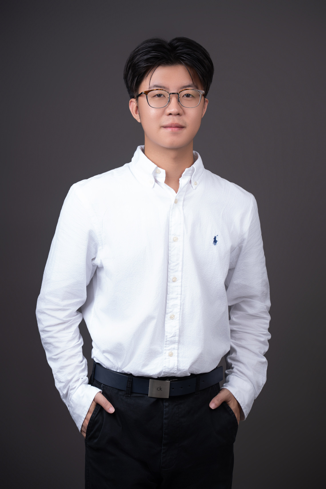
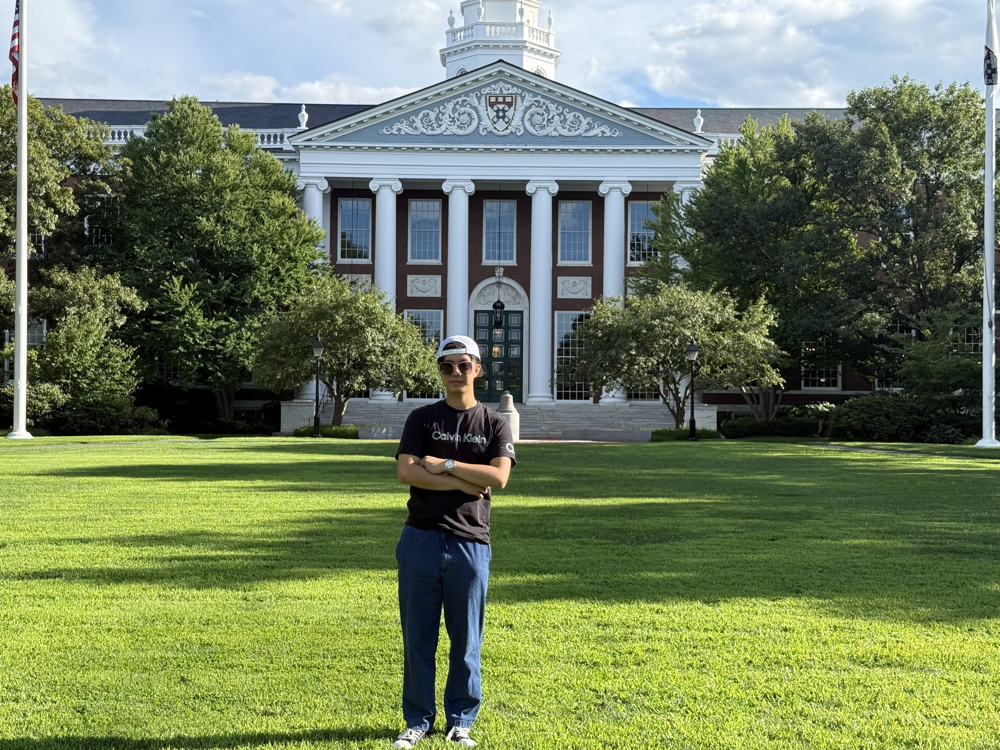

NTU Coconut Wind Rock Club
Performed on keyboards and contributed to band rehearsals, arrangements, and collaborative music projects.
07 / BEYOND RESEARCH
Performed on keyboards and contributed to band rehearsals, arrangements, and collaborative music projects.
Led club operations and coordinated campus and off-campus performances, including rehearsal planning, scheduling, and team coordination.
Participated in regular team training and inter-school competitions.
Self-taught Logic Pro, digital music production, arrangement, keyboard performance, and music programming tools, with experience producing and arranging original music projects.

